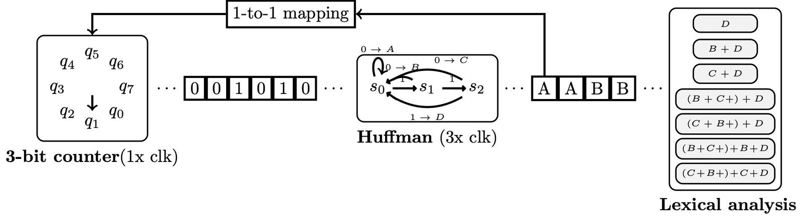
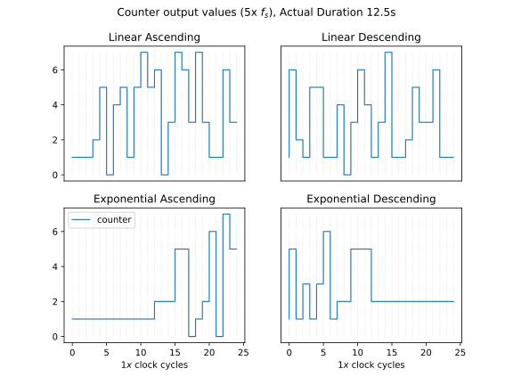
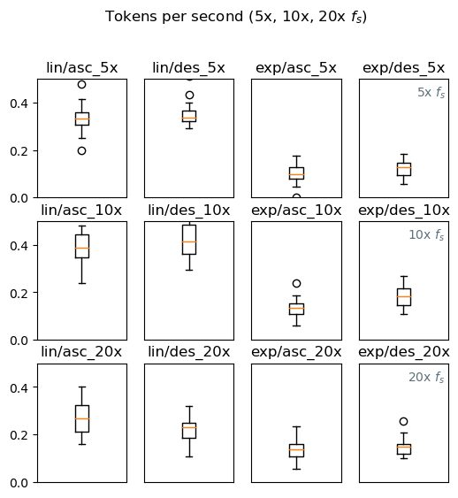
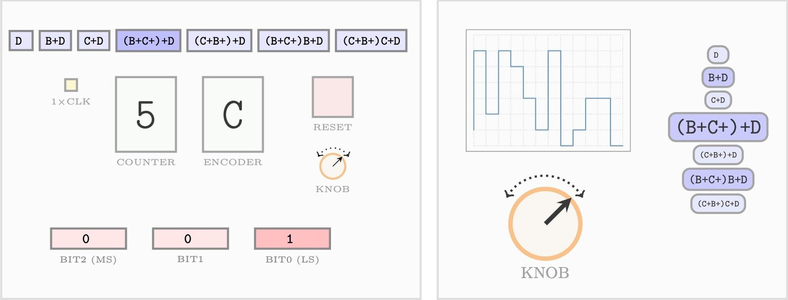

Bottom-up live coding: Analysis of continuous interactions towards predicting programming behaviours
Abstract
This paper explores a minimalist approach to live coding using a single input parameter to manipulate the graph structure of a finite state machine through a stream of bits. This constitutes an example of bottom-up live coding, which operates on a low level language to generate a high level structure output. Here we examine systematically how to apply mappings of continuous gestural interactions to develop a bottom-up system for predicting programming behaviours. We conducted a statistical analysis based on a controlled data generation procedure. The findings concur with the subjective experience of the behavior of the system when the user modulates the sampling frequency of a variable clock using a knob as an input device. This suggests that a sequential predictive model may be applied towards the development of a tactically predictive system according to Tanimoto’s hierarchy of liveness. The code is provided in a git repository.
Author Keywords
NIME, live coding, tactically predictive
CCS Concepts
•Applied computing → Sound and music computing; Performing arts; •Human-centered computing → Interface design prototyping;
Introduction
There are two routes to live coding, either a top-down approach which is how the majority of live coding systems work, or a bottom-up approach which is typically centered on idiosyncratic setups [1][2][3]. We provide an implementation of a bottom-up live coding system capable of generating a minimal language based on regular expressions. We examine whether a bottom-up approach to live coding can inform programming behaviours from predictions run on user's gestural interactions. Recent advances in TidalCycles and Extempore, two popular languages for live coding, demonstrate how artificial intelligence (AI) algorithms can build systems suggesting code patterns to the user [4][5]. This category of systems can be seen as a tactically predictive approach to live coding in Tanimoto’s hierarchy of liveness [6].
Such research has not been done in the case of bottom-up systems because these are still relatively rare. Motivated by this observation, we present an experimental study in which we simulate simple gestural interactions (turning a knob, or adjusting a slider) to guide a lexical analysis process based on bottom-up computations. This experiment is based on a hardware as well as a software prototype. The interaction was conducted on the lowest level of information theory, i.e. the level of individual bits. First-person experiences indicate that this prototype affords intentional control to a certain extent. Furthermore, earlier work suggests that interactive exploration is the way to go [7][8].
We present an algorithmic implementation and a git1 repository along with an exploratory data-driven analysis on the generated sequences. For the data analysis, we conducted a controlled data generation process to examine any statistical dependencies of the system and explore possibilities for future developments. Our aim was to explore the statistical dependencies of the system over continuous gestural interactions, towards a tactically predictive level of liveness [6].
In this paper, we explore an alternative approach in the interpretation of a data stream provided by a continuous controller. Instead of using this stream as continuous control for a parameter [9], we use it as discrete input in an algorithm to modify the graph structure of the algorithm [10]. We propose a radically simplified interface, with far less visual information elements than our original design. The new design, instead of exploiting “experiences of visibility” and “experiences of meaning” explores aspects of interactivity, like fluidity of actions [11].
The goal is to explore the statistical properties of the generated sequences of tokens and examine how to use them in redesigning an interactive musical prototype. The user interface providing input to the machine is composed of a single potentiometer (knob). We explore firstly the outward behavioral characteristics of the machine, i.e. the shapes of streams that it produces in response to shapes of input. That makes possible to devise various scenarios for creating sound based on the output stream.
Related work
Typical live coding systems rely on the level-4 liveness, which is described as “informative, significant, responsive and live” [6]. The level-5 liveness is called “tactically predictive” and presented for the first time in the revision of the hierarchy. An example of a tactically predictive system is the autocompletion mode, a feature of modern text editors. Attempts towards a level-5 in live coding systems were recently presented [4][5]. Our aim is to examine whether a bottom-up approach to live coding may afford interactions which can be classified as tactically predictive.
Continuous interaction in live coding
Previous work on continuous musical interactions in live coding ranges from parameter adjustments [9] to approximate programming [10]. The latter explores binary trees interactively by means of continuous gestural control. Baalman [12], experiments with continuous control in live coding performance and develops an environment called GeCola. Armitage and McPherson [13] present a physical prototype based on a stenotype machine, in which continuous sensory input is used for parameter adjustments.
Low-level computing in live coding
Bottom-up approaches to live coding have been presented since Dave's Griffiths Betablocker [1][2]. This video game system is based on assembly instructions for live coding. Reus [3] presents a more radical approach which intervenes on the motherboard of an iMac computer to rewire its internal computing components. Diapoulis and Zannos presented a hardware prototype along of a modulo-8 function implementation coupled to a variable-length Huffman decoder [7]. In a follow-up study [8] they developed an equivalent interactive software interface and implemented a high-level component capable of generating a regular language. The next step to these developments would be to map the tokens to an instruction set and a corresponding computer architecture. Here, we investigate how to map the 7 tokens to the instruction set presented by Collins [14].
Psychology of programming
The physical and virtual prototypes of our initial design relies on experiences of visibility and meaning [11]. More specifically, all the information was visible, which makes the process transparent, but can also overload the user with information. Here, we discuss how to exchange such decisions with designs that foster interactivity. The decision to limit the interaction to a single knob encourages fluid gestural interactions. Visual components such as the current input value can be replaced with a continuous line representing the knob adjustments.
Methods
Below, we focus on the system design and we present the algorithm description along with one of the main features that enabled the continuous interaction, here called secondary variable clock. In the second part of the methods, we describe the data generation and the statistical analysis. Following up on our previous studies [7][8], we introduce a novel 1-to-1 mapping which enables the use of a single knob to generate a formal language.
Our statistical analysis simulates four main scenarios. These occur out of all combinations of either a smooth and steady gesture or a sudden and unexpected gesture in an ascending or a descending direction. We run our simulations on a faster clock cycle than the clock cycle of the initial prototype, and we select a range which may be realized on a physical prototype. Our initial software and hardware prototypes rely on 0.5 seconds clock cycle for the primary fixed clock.
System design
We employed three main algorithms: i) A fully-connected graph, inspired by a 3-bit counter operating on two’s complement, which is the equivalent to the modulo 8 function (see Image 1); ii) a variable length Huffman decoder, implemented as a FSM with three states, equipped with one-hot entropy encoding (combinational logic); and iii) an algorithm which performs lexical analysis based on regular expressions. Inspired by our motivation to generate a bottom-up approach to live coding using continuous gestural interactions, we used the output of the decoder to modify the input of the 3-bit counter. This decision enabled us to overrun the push buttons for registering the input to the 3-bit counter, and employ a single knob providing the input values instead. We applied 1-to-1 mapping of the encoder's output to the input of the counter. From the 8 values (0-7) of a 3-bit word, we use only the four uneven ones (1, 3, 5, 7) to eliminate the possibility of infinite length sequences during the tokenization process.


High level diagram of the system. From left to right: (i) 3-bit counter, (ii) Huffman decoder, (iii) Lexical analysis.
Algorithm description
Pseudocode
Provide input using a knob
The knob controls the period of a 3-bit counter (secondary variable clock)
The secondary variable clock may span from 0.5x f_s - 20x f_s
The 3-bit counter is initialized, see (i) Image 1
The values are registered by the primary fixed clock
It operates at 1x clk
Initialization conditions do not radically change the system's behaviour
Its input is controlled by the 1-to-1 mapping of the encoder's output
Some symbols may be discarded due to the variable length encoding and the 1x clk
Only uneven digits are used as input to the counter (1, 3, 5, 7)
To avoid infinite length sequence in the lexical analysis
The counter outputs 3 bits at a time
The output is serialized and fed to the decoder
The Huffman decoder operates at 3x clk (ii)
The machine operates on variable-length bit streams
The input to the decoder is 1 bit at a time
The 3x clk is used to avoid an accumulated stream of bits
The encoder's output is a stream of symbols
Feedback channel between the output and the input of the counter (1-to-1 mapping)
Outputs 4 symbols (A, B, C, D), or bytes
The encoding is entropic and context-free
The lexical analysis component is serially fed from encoder's output (iii)
A POSIX expression is generating tokens (words)
Symbol A mapped to empty string
The language implementation is noisy
The input of uneven digits secure a finite length sequence of each token
The token generation has a variable length of symbols
List of tokens:
D
B+D
C+D
(B+C+)+D
(C+B+)+D
(B+C+)+B+D
(C+B+)+C+DTable 1: The four symbols variable-length encoding and the 1-to-1 mapping to the 3-bit counter input values.
Symbol | Binary code | 1-to-1 mapping |
|---|---|---|
|
| 1 ( |
|
| 3 ( |
|
| 5 ( |
|
| 7 ( |
Data generation
The data are generated offline. We simulated four different scenarios of continuous gestural interactions, which can be performed using a knob. These scenarios occur from all combinations of linear and exponential envelopes with either increasing or decreasing values (see Table 2). Together with the four aforementioned combinations, we also examined the effect of different secondary variable clock rates ranging above or below the Nyquist frequency. Specifically, we generated data for six secondary variable clock rates (0.5×, 1×, 2×, 5×, 10× and 20× fs) and one controlled variable in which we run the simulations based on only the primary fixed clock rate.
Table 2: Experimental design for the data collection. A design of 2×2 combinations of simulation scenarios for each experimental condition. A total of 7×20 runs were collected for the exploratory data analysis (see an example on Table 3). The rightmost column “Tokens” shows the total number generated across all experimental conditions. The primary fixed clock condition is a controlled variable that is independent of the secondary variable clock. The simulation scenarios are the four possible pairs occurring from combinations between the Gesture type and Envelope type parameters.
Experimental condition | Gesture type | Envelope type | Tokens |
|---|---|---|---|
Primary fixed clock | - | - | 0 |
Variable clock (0.5×fs) | ascending/descending | linear/exponential | 0 |
Variable clock (1×fs) | ascending/descending | linear/exponential | 82 |
Variable clock (2×fs) | ascending/descending | linear/exponential | 645 |
Variable clock (5×fs) | ascending/descending | linear/exponential | 1190 |
Variable clock (10×fs) | ascending/descending | linear/exponential | 1462 |
Variable clock (20×fs) | ascending/descending | linear/exponential | 1007 |
We generated 20 different sequences for each experimental condition as shown in Tables 2 and 3. Each sequence simulates an actual duration which may be applied in the context of the interactive prototype ranging from 6.25 to 125.0 seconds. If we assume that the typical duration of the clock cycle is 0.5 seconds, this corresponds to a minimum of 12 clock cycles in the interactive prototype. The generated sequences of tokens have a variable length as indicated in the rightmost column of Table 3. The sampling frequency during the offline data generation was 50Hz and the duration of the experiment has a simulation range 0.25 - 5.0 seconds, with a step of 0.25 seconds. The simulated envelopes have a lower boundary 0.01×fs, whereas the upper boundary is determined by the experimental condition.
Image 2 shows the data generated by the counter, under the four simulation scenarios of linear/exponential envelopes and ascending/descending direction of movements (gestures), when the output from the Huffman decoder modifies the increment value of the counter.


Output values of the counter are shown for the four simulation scenarios.
Results
Each of the four simulated scenarios (ascending/descending gestures, linear/exponential envelopes) produces outputs with distinct characteristics independently of the length of the gesture. The statistical analysis identified a relationship between the type of envelope (linear vs exponential) and the differences in the characteristics of the output, which is the number of tokens per second produced. This can be a valuable insight for redesigning the interactive prototype. Finally, the individual token frequencies do not show large variations across experimental conditions and simulation scenarios.
Table 2 shows that the experimental conditions of the primary fixed clock and the secondary variable clock at 0.5×fs did not produce any tokens. We examined all remaining experimental conditions (1×, 2×, 5×, 10×, 20×fs). We excluded 1×fs from the analysis as it produced very few tokens across the simulation scenarios, and would be impossible to use for interactive experimentation. From the three remaining conditions of 5×fs, 10×fs and 20×fs, the exploratory analysis indicates that both the 5×fs and 10×fs are more informative experimental conditions for interactive experimentation. This is indicated in the variability of the boxplots in Image 3, as for the case of 20×fs the corresponding simulated scenarios demonstrate overlapping distributions.
Image 3 (boxplots) shows how the token generation differs based on different experimental conditions and simulation scenarios. It indicates that the simulated scenario 5×fs can be a better option for the development of a tactically predictive system. This is because there is a clustering of values for the families of linear and exponential envelopes. In practice, this can be implemented when the live coder is overwhelmed with too many token generations. That is, a sudden and unexpected gesture will most likely result in an average token generation of 0.1 tokens per second, whereas in the case of a linear envelope the token generation occurs approximately 0.3 times per second. Thus, by employing a sudden gestural interaction, the user may generate one token every 10s, instead of one token every 3s for the case of a smooth and steady gesture. This system’s affordance will provide some time to the user to examine how to proceed to the next token generation, as this would be realized in a 20 clock cycle on the interactive prototype.


Boxplots showing the number of generated tokens per second for three different experimental conditions (5x, 10x, 20x fs) and simulation scenarios (‘lin’ for linear and ‘exp’ for exponential envelopes; ‘asc’ for ascending and ‘des’ for desceding gestures).
Generated sequences for simulated scenarios
Table 3 shows the length of the generated tokens for the experimental condition of 5×fs. The second column denotes the actual duration in seconds assuming a clock cycle of 0.5s. We selected lower end 6.25s for the actual duration to avoid zero-length sequences, while considering a reasonable minimum time span for applying effortful computations. Our short-term musical memory has an upper time-span of 3-5s [15], and thus 6.25s is close enough for expert user interaction.
Table 3: Number of tokens for the 5×fs experimental condition. The columns show the results for the 20 runs for each simulation scenario.
Run (sequence) | Actual Duration (s) | Linear Ascend | Linear Descend | Exponential Ascend | Exponential Descend |
|---|---|---|---|---|---|
1 | 6.25 | 2 | 2 | 1 | 1 |
2 | 12.5 | 6 | 4 | 1 | 1 |
3 | 18.75 | 6 | 7 | 1 | 2 |
4 | 25.0 | 5 | 10 | 0 | 2 |
5 | 31.25 | 13 | 16 | 3 | 5 |
6 | 37.5 | 14 | 13 | 5 | 6 |
7 | 43.75 | 11 | 17 | 2 | 8 |
8 | 50.0 | 15 | 18 | 5 | 3 |
9 | 56.25 | 20 | 19 | 8 | 6 |
10 | 62.5 | 19 | 20 | 7 | 8 |
11 | 68.75 | 21 | 20 | 6 | 4 |
12 | 75.0 | 31 | 22 | 9 | 9 |
13 | 81.25 | 27 | 28 | 5 | 11 |
14 | 87.5 | 25 | 26 | 6 | 11 |
15 | 93.75 | 33 | 34 | 9 | 9 |
16 | 100.0 | 33 | 32 | 9 | 13 |
17 | 106.25 | 34 | 31 | 16 | 12 |
18 | 112.5 | 40 | 42 | 14 | 15 |
19 | 118.75 | 44 | 40 | 14 | 17 |
20 | 125.0 | 47 | 40 | 22 | 19 |
Frequencies of tokens
Table 4 demonstrates that the frequencies of the generated tokens do not show variations across different simulation scenarios.
Table 4: Frequencies of tokens. Column 1 shows the simulation scenarios; ‘lin’: linear envelope, ‘exp’: exponential envelope, ‘asc’: ascending gesture, ‘des’: descending gesture.
5×fs | D | B+D | C+D | (B+C+)+D | (C+B+)+D | (B+C+)+B+D | (C+B+)+C+D |
lin/asc | 0.26 | 0.27 | 0.07 | 0.13 | 0.09 | 0.15 | 0.02 |
lin/des | 0.31 | 0.26 | 0.07 | 0.12 | 0.11 | 0.10 | 0.03 |
exp/asc | 0.31 | 0.20 | 0.08 | 0.10 | 0.07 | 0.20 | 0.03 |
exp/des | 0.34 | 0.24 | 0.09 | 0.12 | 0.12 | 0.06 | 0.02 |
While being simplistic and noisy, this regular language implementation already affords an easy manner to make predictions. When the first symbol of a token sequence is being processed and is either a B or a C, then the search space of the expected tokens is immediately reduced to 3 out of 7 possible outcomes. This observation implies an inherent notion of a “tactically predictive” system, as the programmer can be presented with the future possibilities, although without having immediate control to select any of them.
The predictability was tested subjectively by the first author through experimentation, who concluded that it was relatively easy to predict which tokens will be excluded by the system.


Left-hand side shows the GUI from the initial prototype [8]. Right-hand side shows a preliminary redesign, where the token displays may dynamically change in size and color to indicate probabilities for the next token.
Discussion
We presented a bottom-up live coding system and identified its affordances potentially presenting embodied meanings. We examined four pairs of simulation scenarios, as these occur out of the combinations of ascending and descending gestures, which may be either smooth and steady (linear envelope) or sudden and unexpected (exponential envelope) movements. Statistical analysis showed that two clusters are formed across the linear and exponential envelopes. This indicates that a tactically predictive model may rely on such ground truth knowledge. Moreover, a tactically predictive bottom-up system should not only predict the next token, but also provide an estimate of when this token will be produced. Finally, continuous interactions may also carry meaning in the form of embodied metaphors [16]. Such human universals are particularly important when motivated by inclusion and accessibility in design.
We examined aspects of the interactive prototype and we indicated that a redesign should be based on fostering aspects of interactivity of the interface such as fluidity of actions (see Image 4). A detailed analysis of the interface should be carried out based on the patterns of user experience framework [11]. While such endeavour goes beyond the scope of the study, many different aspects may be affected, like the clock period, visual displays and more. Different formal language implementations may also be examined so as to compensate for the noisiness of the proposed regular language used here. This implementation can take advantage of previous developments by mapping both the tokens and the continuous knob values to an instruction set used for interactive musical experimentation [14].
Conclusions
We conducted a data-driven statistical analysis based on controlled simulations of simplified continuous gestural interactions to examine whether a tactically predictive module for a bottom-up approach to live coding can be implemented. Early evidence suggests that different gestural manners can modify the rate of change of the lexical analysis process using a single knob as input device. Future work is required to analyse dependencies between the variable length sequences of tokens and how these are related to the counter values and envelope shapes, to assess the predictive potential of this system.
Ethical statement
The present study follows ethical principles of open and free software along with low consumption on computational resources. No human participants were recruited on this study. Also, the proposed version for redesigning the hardware and software prototype is considering accessibility in design. Admittedly this ability depends on a deep familiarity of the inner mechanism of the system, which requires solid grounding in the theory of finite state machines and digital design. However, the authors believe that this is a first step towards making such systems more generally accessible. The authors report no potential conflict of interest. This work was partially supported by the Wallenberg AI, Autonomous Systems and Software Program – Humanities and Society (WASP-HS) funded by the Marianne and Marcus Wallenberg Foundation and the Marcus and Amalia Wallenberg Foundation.
Footnotes
Citations
- ↩Bovermann, T., & Griffiths, D. (2014). Computation as material in live coding. Computer Music Journal, 38(1), 40–53.
- ↩McLean, A., Griffiths, D., Collins, N., & Wiggins, G. (2010). Visualisation of live code. Electronic Visualisation and the Arts (EVA 2010), 26–30.
- ↩Reus, J. (2011). iMac music. https://jonathanreus.com/portfolio/cmmbe/
- ↩Attanayake, U., Swift, B., Gardner, H., & Sorensen, A. (2020). Disruption and creativity in live coding. 2020 IEEE Symposium on Visual Languages and Human-Centric Computing (VL/HCC), 1–5.
- ↩Wilson, E., Lawson, S., McLean, A., Stewart, J., & others. (2021). Autonomous Creation of Musical Pattern from Types and Models in Live Coding.
- ↩Tanimoto, S. L. (2013). A perspective on the evolution of live programming. 2013 1st International Workshop on Live Programming (LIVE), 31–34.
- ↩Diapoulis, G., & Zannos, I. (2012). A minimal interface for live hardware coding. Live Interfaces.
- ↩Diapoulis, G., & Zannos, I. (2014). Tangibility and low-level live coding. ICMC.
- ↩Tanimoto, S. L. (2013). A perspective on the evolution of live programming. 2013 1st International Workshop on Live Programming (LIVE), 31–34.
- ↩Magnusson, T. (2014). Improvising with the Threnoscope: Integrating Code, Hardware, GUI, Network, and Graphic Scores. NIME, 19–22.
- ↩Kiefer, C. (2015). Approximate Programming: Coding through Gesture and Numerical Processes. Proceedings of the First International Conference on Live Coding, ICSRiM, University of Leeds.
- ↩Blackwell, A. F. (2015). Patterns of user experience in performance programming. Proc. First International Conference on Live Coding.
- ↩Tanimoto, S. L. (2013). A perspective on the evolution of live programming. 2013 1st International Workshop on Live Programming (LIVE), 31–34.
- ↩Attanayake, U., Swift, B., Gardner, H., & Sorensen, A. (2020). Disruption and creativity in live coding. 2020 IEEE Symposium on Visual Languages and Human-Centric Computing (VL/HCC), 1–5.
- ↩Wilson, E., Lawson, S., McLean, A., Stewart, J., & others. (2021). Autonomous Creation of Musical Pattern from Types and Models in Live Coding.
- ↩Magnusson, T. (2014). Improvising with the Threnoscope: Integrating Code, Hardware, GUI, Network, and Graphic Scores. NIME, 19–22.
- ↩Kiefer, C. (2015). Approximate Programming: Coding through Gesture and Numerical Processes. Proceedings of the First International Conference on Live Coding, ICSRiM, University of Leeds.
- ↩Baalman, M. (2020). the machine is learning. Live Interfaces.
- ↩Armitage, J., McPherson, A., & others. (2017). The Stenophone: live coding on a chorded keyboard with continuous control. International Conference on Live Coding.
- ↩Bovermann, T., & Griffiths, D. (2014). Computation as material in live coding. Computer Music Journal, 38(1), 40–53.
- ↩McLean, A., Griffiths, D., Collins, N., & Wiggins, G. (2010). Visualisation of live code. Electronic Visualisation and the Arts (EVA 2010), 26–30.
- ↩Reus, J. (2011). iMac music. https://jonathanreus.com/portfolio/cmmbe/
- ↩Diapoulis, G., & Zannos, I. (2012). A minimal interface for live hardware coding. Live Interfaces.
- ↩Diapoulis, G., & Zannos, I. (2014). Tangibility and low-level live coding. ICMC.
- ↩Collins, N. (2015). Live Coding and Machine Listening. Proceedings of the International Conference on Live Coding, 4–11.
- ↩Blackwell, A. F. (2015). Patterns of user experience in performance programming. Proc. First International Conference on Live Coding.
- ↩Diapoulis, G., & Zannos, I. (2012). A minimal interface for live hardware coding. Live Interfaces.
- ↩Diapoulis, G., & Zannos, I. (2014). Tangibility and low-level live coding. ICMC.
- ↩Snyder, B., & Snyder, R. (2000). Music and memory: An introduction. MIT press.
- ↩Lakoff, G., & Johnson, M. (1980). Metaphors we live by. Chicago: Univ. Press, Chicago/IL.
- ↩Blackwell, A. F. (2015). Patterns of user experience in performance programming. Proc. First International Conference on Live Coding.
- ↩Collins, N. (2015). Live Coding and Machine Listening. Proceedings of the International Conference on Live Coding, 4–11.